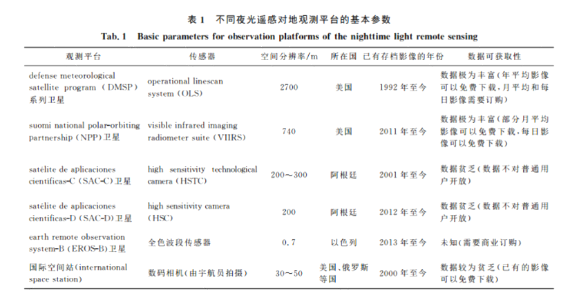
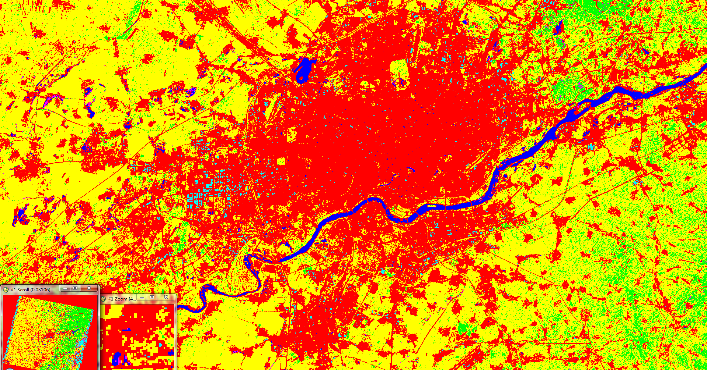
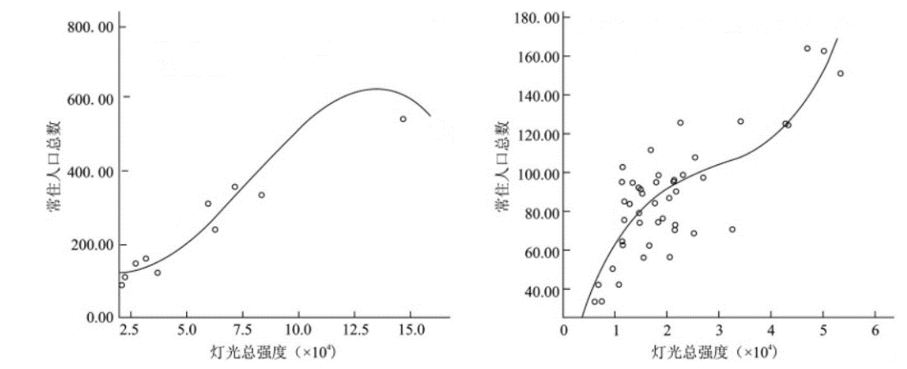

基于夜光遥感数据的1995-2013年辽中南城市群城市化进程研究
1 引言
辽中南区域是东北人口稠密、经济发达、人民生活最富裕的经济区域，也是城市化水平相对较高的城市群地区，是东北区经济发展的龙头[1-2]。因此，辽中南城市群的发展在东北老工业基地振兴中发挥着重要作用，其作为整个东北地区经济增长极所具有的辐射力和带动力更是备受关注[3]。监控和理解辽中南城市空间特征及其变化过程，调整此过程中的土地利用格局，有利于降低城市化过程中风险水平 [4-6]；同时，研究辽中南城市群的人口分布特征及时空演变规律，能够为制定科学的人口发展政策，促进区域可持续发展提供参考[7]。
始于20世纪70年代的美国国防气象卫星计划(Defense Meteorological Satellite Program, DMSP)搭载的线扫描系统(Operational Linescan System, OLS)传感器由于它强大的光电放大特性。被发现可以捕捉到夜间城镇发出的微弱的光，并使之明显区别于黑暗的乡村背景[8]，且DMSP/OLS数据与AVHRR具有相同空间分辨率，为大尺度的城市与人口研究提供一种独特数据获取手段[9]。因此DMSP-OLS数据被大量用于城市发展评估与人口估算[10-12]。
建成区范围是城市化的重要参量，研究表明夜光影像能够有效地提取建成区范围及变化,国内外已有多名学者完成了对城市建成区的提取[13-16]。Sutton等[13]在对DMSP/OLS夜间灯光数据和人口分布数据对比分析后，提出别提取低收入地区、高收入地区和一些特殊地区(如埃及尼罗河地区)的城市建成区； Imhoff[14]研究了夜间灯光数据中城市建成区光斑的空间形态特性,提出在逐渐增加分割阈值的过程中,以城市斑块周长大幅度变化的临界点进行城市区域的提取；Henderson[15]则从更高精度的TM影像中提取城市区域作为辅助数据，与DMSP/OLS数据进行比较分析，获取适用于从夜间灯光数据中进行城市建成区提取的分割阈值；何春阳、史培军等[16]以中国城市建设用地的统计数据作为参考依据,根据夜间灯光数据的自身特点,计算出适宜的阈值用于建成区域的提取。
在使用夜光遥感估算人口方面，Sutton等[17]研究发现美国陆地的夜光亮度和人口密度分布图的具有较好的相关性，线性回归的决定系数达到0.63，这为利用夜光影像研究人口密度提供了经验基础；LO等[18]利用中国1997年的DMSP/OLS夜光影像的点亮面积、夜光总量、平均发光强度、夜光比例等多个指标与人口、非农业人口在县级和城市单元上进行回归分析，发现夜光数据能够较好地在县级尺度上模拟非农业人口，证明了夜光影像对于人口建模具有很好的潜力。
因此，本研究利用DMSP/OLS夜光遥感数据对辽中南地区城市群1995-2013年进行建成区信息提取以及人口估算，从而对城市化空间过程以及人口空间分布变化过程进行重建，目的是为辽中南地区的城市化过程以及人口的空间变化提供更定量化评价，对东北的振兴具有一定的指导意义。
2 研究区和数据来源
2.1 研究区介绍
目前对于辽中南城市群的研究中，对城市群所涵盖的空间有较大分歧，主要在于所包含的城市数目上，有的认为辽中南城市群由沈阳、大连、鞍山、抚顺、本溪、丹东、营口、辽阳、盘锦、铁岭10个城市组成[19],也有的认为辽中南城市群由沈阳、鞍山、抚顺、本溪、丹东、营口、辽阳、铁岭8个城市组成[20]。而根据2016年我国规划的20个城市群中，沈阳、大连、鞍山、抚顺、本溪、丹东、营口、辽阳、盘锦共9个城市被划入辽中南城市群，为9大区域性城市群（国家二级城市群）之一，本研究也将该区域作为辽中南城市群的空间范围(下图)。
2.2 数据来源
本研究利用1995-2013年间共19年的DMSP-OLS的夜间稳定灯光影像数据，其下载自美国国家海洋和大气管理局下属的国家地理数据中心网站( http://ngdc.noaa.gov/eog/dmsp/downloadV4composite.html )。DMSP-OLS夜间稳定灯光影像数据的空间分辨率为30"(弧秒，在赤道附近约为1km，40°N处约为0.8 km)，每一幅影像数据记录了一段时间内(通常为1年)在无云条件下灯光被连续探测到的频率[8]。
本研究所使用的Landsat TM/ETM+影像，空间分辨率30m，作为辅助数据来提取建成区，数据来自美国地质调查局地球资源观测与科学中心( http://glovis.usgs.gov/index.shtml),为Level 1标准地形校正产品，已进行过系统辐射校正、地面控制点几何校正且通过DEM做过了地形校正。 本研究用于精度验证的建成区面积统计数据来源于中国统计年鉴[21]。人口统计数据来源于中国分市县人口调查数据。
3 研究方法
3.1 建成区信息提取方法
应用DMSP-OLS稳定灯光影像数据提取城市建成区的关键步骤就是确定用于区分建成区像元和非建成区像元的阈值。当前提取阈值的方法主要有经验阈值法[22]、突变检测法[23]和基于辅助数据的比较法[24-25]。其中经验阈值法过于主观[26],而在实践中，我们发现突变检测法适用于上海、北京等大城市，而不适用于辽中南城市群中尚不发达的小城市，这主要是因为在阈值提高的过程中，小城市并不会产生内部破碎，因此无法得到阈值。综上所述，本研究采用了基于Landsat TM/ETM+数据的比较法来确定提取建成区的最佳阈值。而由于在大尺度研究中不能使用单一的阈值提取城镇信息[27],因此，本研究将辽中南区域按照地级市行政边界划分为9个区域分别提取阈值，并根据1995-2013年中各年辽中南区域的Landsat TM/ETM+数据的质量，选择出1995, 1997, 2000, 2004, 2007, 2010, 2013年7年来进行研究。
为方便计算，所用数据都统一采用兰伯特等积方位投影(Lambert Azimuthal Equal Area Projection)。对每年的Landsat TM/ETM+数据进行拼接，并对使用的DMSP-OLS数据与拼接后的Landsat TM/ETM+数据按照辽中南各地级市的掩模进行裁剪。
分别对这些区域1995-2013年的Landsat TM/ETM+遥感影像进行最大似然分类(下图)，提取出建成区区域。并在每一年分类后的影像上随机取100个点，在谷歌地球上对其分类的土地利用类型进行比对，得到历年的平均正确率达到了94.57%。
编写python程序，从0开始不断增大分割阈值对夜光遥感影像进行二值化，直到阈值达到某一个点时，其与Landsat-TM/ETM+提取的建成区区域的Kappa系数大于根据前一个阈值计算的Kappa系数以及后一个阈值计算的Kappa系数，该阈值即为该年该地级市的建成区提取最佳阈值。使用上述方法对1995, 1997, 2000, 2004, 2007, 2010, 2013年辽中南城市群各地级市分别提取最佳阈值，并使用这些阈值提取辽中南建成区域。
3.2 城市扩张类型判别分析方法
结合刘纪远等提出的利用凸壳理论[26]来识别城市扩张类型的方法，将城市空间扩张类型主要分为两个部分: 首先是构建包含城市群内所有城市用地的凸壳即包含城市内所有城市用地的最小凸多边; 然后判断城市扩张部分是否落在凸壳内，若城市用地扩张部分落在凸壳外的像元数大于落在壳内的像元数，则确定该城市的城市用地扩张类型为外延型，否则确定为填充型(下图)。前者一般被认为是“摊大饼”式的粗放蔓延，而后者则使城市更加紧凑，紧凑城市是一种尽可能充分利用已经存在的城市空间的结果[27]，被认为是一种能源消耗最小的城市用地扩展方式[28]。
本研究构建了辽中南1995,1997,2000,2004,2007,2010,2013年辽中南9个城市的凸壳，然后分别计算1995-1997年,1997-2000年,2000-2004年,2004-2007年,2007-2010年，2010-2013年6个时期增加的城市像元落在凸壳内部和外部的数目及比例。
3.3 城市空间格局变化分析方法
景观格局指标反映了大小和形状不一的景观斑块在空间上的排列特征[29].本项目选取了斑块数量(Number of Patches, NP)、景观总面积(Total Area, TA)、平均斑块大小(Mean Patch Size, MPS)、最大斑块面积比(Largest Patch Size, MPS)、斑块密度(Largest Patch Size, MPS)、景观形状指数(Landscape Shape Index, LSI)等6个典型景观格局指标，计算了辽中南城市群的1995-2013年城市发展空间格局变化特征。
3.4 人口数据模拟方法
卓莉等[16]指出不同规模层级的城市灯光指数与人口的关系大不相同，基于灯光强度与人口的显著相关关系，本研究将研究区域划分为市、县两个层级，对不同层级的人口数据与灯光数据分别做回归分析，探讨常住人口总量和灯光总量之间的关联关系。因变量ｙ为辽中南城市群10个地级市或73县级行政区的常住人口数TPP， 自变量ｘ为10个地级市或73个县级行政区内所有栅格的灰度值之和，即每个行政区的灯光值总数。地级市和县级市基于灯光强度的拟合图和对应的回归方程，相关系数为均较好，拟合效果较好。分别利用这些拟合多项式利用可分别求得各行政区内基于灯光像元的预测初始人口数FIF1、FIF2。在初始预测结果基础上运用人口校准参数Kn校正像元人口数，人口校准参数Kn可对行政单元上模拟的总人口进行修正，得到最终的栅格单元人口数 POPi（如下图）：
FIP1 = a1 × TDN3 + a2 × TDN2 + a3 × TDN
FIP2 = b1 × TDN3 + b2 × TDN2 + b3 × TDN
POPi = FIP × Kn = FIP × TPPn /TMPn
式中:POPi为最终确定的像元上的人口数；TDN为区域像元总灰度值; Kn为校正比例参数，是该类型第n行政单元上的统计常住人口总数TPPn与模拟的初始人口总数TMPn之比。a1、a2 、a3、b1、b2、b3均为拟合系数。
3.5 人口聚集指数计算方法
人口集中指数是根据人口和土地面积的关系来分析人口区域分布的特点，反映人口分布相对于土地面积的集中或分散情况，从总体上揭示人口空间分布集中或分散的程度及其变动趋势。人口集中指数评价指标计算公式如下：
式中：Pi、Si分别为i像元的人口数量和面积；P、S分别为各行政区总人口数量和总面积；为行政区内像元个数；人口集中指数Ci的数值在[0，1]之间，Ci越大，说明人口的区域分布越集中；趋于1时，说明人口分布几乎集中分布于某一“点”；反之Ci越小，说明人口的区域分布越分散；趋于0时，说明人口几乎均匀分布于各地区。
4 结果分析
4.1 建成区信息提取精度验证
将DMSP-OLS夜光遥感数据按照最佳阈值提取的建成区区域与Landsat最大似然分类得到的建成区区域进行比较以进行精度评价，计算得各年各地级市的总体精度与Kappa系数平均值分别为95.41%与0.59，并将DMSP-OLS夜光遥感数据提取的面积与政府发布的城市建成区面积统计数据进行比较，得到提取的历年城市建成区区域的平均相对误差为0.139，可见本项目利用DMSP-OLS数据提取的1995-2013年城镇用地时空信息基本能够反映辽中南区域城镇发展的实际情况。将DMSP-OLS提取的城市建成区域与Landsat TM/ETM+最大似然分类提取的城市建成区域进行对比验证(如图4所示)，发现DMSP-OLS数据提取结果与Landsat TM/ETM+数据提取结果在空间上吻合良好，且DMSP-OLS数据提取结果的噪声水平更低，直观地反映地表人类活动密集的空间范围，但因其分辨率较低和灯光扩散效应的影响，其在精细程度上不及后者。这也证明了在大中时空尺度下城市区域范围的提取时，DMSP-OLS数据提取照亮区域来估算研究区域城市建成区面积仍是一种简便、可行的方法。
4.2 建成区信息提取结果分析
根据各年各地级市的最佳阈值提取建成区域，制作出的辽中南城市群历年建成区域图(如下图)

1995-2013年辽中南城市群总建成区面积随时间变化如下图，可以看出辽中南区域的建成区面积在这段时间内增加了1.12倍，在1995-2004年间加速增长，而在2004-2010年左右增速稳定在5%以上，达到峰值，而在2010-2013年增速开始有所回落，一定程度上预示辽中南区域在近几年的衰落。
1995-2013年辽中南城市群各地级市建成区面积随时间变化如图8，可以看出辽中南城市群中，发展最活跃的为沈阳和大连，在1995-2013年中面积分别增加了1.78倍与1.08倍，而其他地级市的发展则较为缓慢，增幅最小的是盘锦与丹东，分别只增加了0.28倍与0.30倍。说明在辽中南城市群中的城市化主要以大城市为主导，而其他中、小城市则发育不足，大型城市与中、小城市的城市化进程存在非常大的差距。
4.3 城市扩张类型分析
研究得到的辽中南9大城市1995-2013年城市扩张类型结果如表1,可以看出在1995-2013年间，大部分城市以外延扩张为主，而在2000-2013年间，鞍山、抚顺、盘锦均出现了填充扩张的现象(鞍山2000-2007、抚顺2000-2013、盘锦2004-2007和2010-2013)。抚顺和鞍山由于其周边山地或者丘陵的影响，随着时间的变化，城市的扩张受到的地形阻力越来越大(下图)，因此不可能像平原地区城市一样外延扩张，而出现了填充的扩张方式。不同于抚顺和鞍山，盘锦位于平原，地势低洼平坦，它出现填充扩张的原因是其建成区域扩张缓慢而造成的。此外，值得一提的是沈阳在2010-2013年也出现了填充扩张的现象，城市的紧密程度有所提高。
4.4 城市空间格局变化分析
研究得到的辽中南城市群1995-2013年各景观指标如表2，并根据表2制作出如下图所示的各项指标在1995-2013年间的变化趋势图。
从斑块数的变化情况来看，在1995-2000年与2007-2013年间斑块数快速上升，说明在这段时间里辽中南区域内有很多小城镇发展为新城市；而在2000-2007年间斑块数变化不大，而景观总面积任然稳步上升，说明这段时间里仅为原有的城市群在扩张，而小城镇发展缓慢。
在辽中南区域内，最大斑块为沈阳市，从最大斑块面积比的变化情况来看，沈阳在2000-2007年间迅速扩张，速度远大于其他地区；而在2007-2013年开始，由于受城市土地资源有限的客观条件制约以及其他城市的快速发展，沈阳扩张速度相对减缓，首位度开始下降。
景观形状指数是通过计算某一景观类型的斑块周长与同面积圆形的周长之比，来测定该景观类型的复杂程度。景观形状指数越高，说明城市形状变得复杂多样，与面积类似、形状不规则的城市相比，饼状城市与外界环境交界面更小，与外界物质、能量交换不畅，带来交通拥堵、污染物排放增加、大气污染、热岛效应、开放空间减少等问题[30-31]。在1995-2013年间辽中南区域内的城市景观形状指数呈现加速上升的态势，说明辽中南城市群的形状趋于复杂和不规则，与外界接触的总边界长度与边界密度提高，区域的景观生态过程活跃。
4.5 人口数据模拟结果分析
根据1995年、1997年、2000年、2004年、2007年、2010年、2013年7年辽中南地区各地级行政区人口估算数、非农业人口估算数（如下图），分析随着时间变化各地级行政区城乡人口比的关系。结果表明，该地区总体的人口城镇化的趋势为1995—2000年平稳发展，2000到2010年快速发展，到了2000—2013年，该地区城镇化进程减缓乃至部分地区停滞。主要原因是该地区人口自然增长慢、人口大量的外迁和该区域城市间的相互迁移导致的。总体看来，沈阳、大连仍然是本地区城镇化水平最高的，而辽阳、锦州、丹东城镇化水平相对较低。
4.6 人口聚集指数计算结果分析
人口聚集指数计算结果分析结果表明，人口聚集指数在空间上与夜光遥感的灰度值具有高度的拟合性，进一步说明夜光遥感能够很好地反映人类活动。图13可以看出，从1995—2013年，沈阳市一直表现出高聚集的状态，且这种趋势正在增加，表现了沈阳市强大的城市吸引力；大连市后来居上，从21世纪开始，表现出逐步增长地人口集聚现象。其他城市，如抚顺、营口则出现人口聚集指数减小的趋势。
5 结论
辽中南城市群由于其独特的区位优势在东北老工业基地振兴中发挥着重要的作用，该地区建成区在1995-2013年期间快速扩张，根据本研究大致可分为3个阶段：1995-2000年城市群初始发育阶段、2000-2007年大城市快速扩张阶段、2007-2013年大城市稳定发展阶段。
在1995-2000年城市群初始发育阶段，辽中南区域很多小城镇发展为新城市，城市扩张类型均为外延扩张，建成区面积加速上升，大、中、小城市同步发展。各城市人口数量稳步增长。
在2000-2007年大城市快速扩张阶段，辽中南区域中小城市发展严重滞后，没有新城市的诞生，而沈阳和大连两个大城市快速扩张，与中小城市形成了巨大的差距。同时，城市的扩张类型仍然以外延扩张为主导，而在一些周边存在山地或丘陵的地区，城市由于地形原因开始出现了填充扩张的现象。沈阳、大连表现出极强的人口集聚性，其他城市不同程度地受到影响。
在2007-2014年大城市稳定发展阶段，沈阳的发展由于受城市土地资源有限的客观条件制约，其发展速率开始下降，城市扩展模式转变为填充型。而中小城市快速发展，涌现出很多新城市，大型城市与中小城市差距开始缩小。然而人口自然增长缓慢已经成为制约该地区城市化的因素之一。
根据辽中南区域1995-2013年的发展情况，本研究小组认为辽中南城市群在未来需要将发展重点转向中小城市，缩小大型城市与中小城市的差距，最终实现城市群内各类城市的协调发展。
李熙和李德仁使用K-means聚类将叙利亚及其周边地区按灯光随时间的变化划分为二类（稳定地区和下降地区）与三类（稳定，中度下降与急剧下降），发现叙利亚与其周边国家存在明显差别，说明国际边界会造成社会经济的不连续。